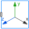

LinesVisualizing a set of lines as cylinders with variable size, e.g., used to display characters (no Frame connector) |
Information
This information is part of the Modelica Standard Library maintained by the Modelica Association.
With model Lines a set of dynamic lines is defined
that are located relatively to frame_a. Every line
is represented by a cylinder. This allows, e.g., to define simple shaped
3-dimensional characters. Note, if the lines are fixed relatively to frame_a,
it is more convenient to use model Visualizers.FixedLines.
An example for dynamic lines is shown in the following figure:
The two letters "x" and "y" are constructed with 4 lines
by providing the following data for input variable lines
lines = {[0, 0; 1, 1],[0, 1; 1, 0],[1.5, -0.5; 2.5, 1],[1.5, 1; 2, 0.25]}
Via vectors n_x and n_y a two-dimensional coordinate system is defined. The points defined with variable lines are with respect to this coordinate system. For example "[0, 0; 1, 1]" defines a line that starts at {0,0} and ends at {1,1}. The diameter and color of all line cylinders are identical and are defined by parameters.
Inputs (9)
| R |
Default Value: Frames.nullRotation() Type: Orientation Description: Orientation object to rotate the world frame into the object frame |
|---|---|
| r |
Default Value: {0, 0, 0} Type: Position[3] (m) Description: Position vector from origin of world frame to origin of object frame, resolved in world frame |
| r_lines |
Default Value: {0, 0, 0} Type: Position[3] (m) Description: Position vector from origin of object frame to the origin of 'lines' frame, resolved in object frame |
| n_x |
Default Value: {1, 0, 0} Type: Real[3] Description: Vector in direction of x-axis of 'lines' frame, resolved in object frame |
| n_y |
Default Value: {0, 1, 0} Type: Real[3] Description: Vector in direction of y-axis of 'lines' frame, resolved in object frame |
| lines |
Default Value: zeros(0, 2, 2) Type: Position[:,2,2] (m) Description: List of start and end points of cylinders resolved in an x-y frame defined by n_x, n_y, e.g., {[0,0;1,1], [0,1;1,0], [2,0; 3,1]} |
| diameter |
Default Value: 0.05 Type: Length (m) Description: Diameter of the cylinders defined by lines |
| color |
Default Value: {0, 128, 255} Type: Color Description: Color of cylinders |
| specularCoefficient |
Default Value: 0.7 Type: SpecularCoefficient Description: Reflection of ambient light (= 0: light is completely absorbed) |
Components (2)
| R |
Type: Orientation Description: Orientation object to rotate the world frame into the object frame |
|
|---|---|---|
| cylinders |
Type: Shape[n] |
Used in Components (3)
|
Modelica.Mechanics.MultiBody World coordinate system + gravity field + default animation definition |
|
|  |
Modelica.Mechanics.MultiBody.Visualizers Visualizing a coordinate system including axes labels (visualization data may vary dynamically) |
|
Modelica.Mechanics.MultiBody.Visualizers.Internal Visualizing a set of lines as cylinders (e.g., used to display characters) |